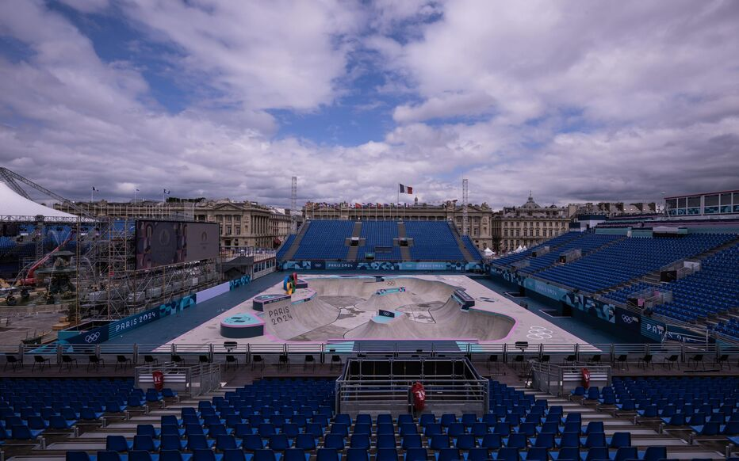

The Concorde Arena
Installed on the Place de la Concorde, which hosted urban sports competitions such as BMX freestyle, skateboarding, and breaking, will be dismantled to allow the Place de la Concorde to return to its original appearance.

The developments around the Trocadéro and the Eiffel Tower
The developments around the Trocadéro and the Eiffel Tower, which served for beach volleyball and other sports events, will be dismantled, and the iconic sites will return to their usual configuration.